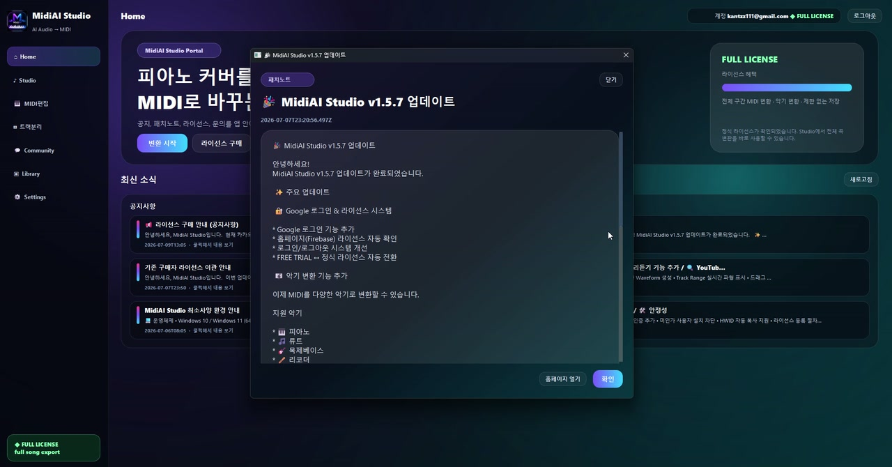

Guide · AI & MIDI fundamentals
MIDI vs Audio: Understanding the Core Difference
MIDI and audio are two of the most confused concepts in music technology, and the confusion causes real mistakes — people expect to edit individual notes in a recording, or wonder why a MIDI file sounds different on another device. Clearing up the distinction is foundational to understanding everything about conversion.
The difference is not subtle once you see it: audio is a recording of sound, while MIDI is a set of instructions for producing sound. That single distinction — recording versus instructions — explains their different capabilities, their different file sizes, and why converting one way is easy and the other is hard.
This guide explains the split clearly and traces its consequences, so that the rest of the conversion landscape makes sense. Whether you use MidiAI Studio or any other tool, this is the concept everything else rests on.

Instructions versus recordings: the core split
Audio is a recording of actual sound, stored as a waveform — a continuous capture of air pressure over time that reproduces exactly what was heard. MIDI is a set of instructions — which notes to play, when, how long, and how hard — that a sound source interprets to produce sound.
The essential distinction is recording versus instructions: audio captures the result of music being made, while MIDI describes the actions that would make it. This is why audio sounds identical everywhere and MIDI can sound different depending on what plays it.
What a MIDI file actually is
Because audio is a recording of combined sound, the individual notes within it are fused into a single waveform and cannot be separated or edited as notes — you can process the sound but not grab the third note of a chord and move it. MIDI, being instructions, keeps every note as a distinct, editable event, which is precisely why converted MIDI is so flexible.
This difference drives the file-size and fidelity trade-offs. Audio must store the full detailed waveform, making it large but perfectly faithful to what was recorded, while MIDI stores only compact instructions, making it tiny and endlessly editable but dependent on the sound source that renders it. Neither is better; they optimize for different things.
The asymmetry of conversion follows directly. Turning MIDI into audio is easy because you are simply following instructions to produce sound — MidiAI Studio or any synth just plays the notes. Turning audio into MIDI is hard because you must reverse-engineer the instructions from the finished recording, inferring the individual notes back out of a fused waveform, which is the entire challenge of transcription.
What an audio file actually is
The same melody as audio and as MIDI
Imagine a simple melody in C major recorded two ways: once as an audio file of a piano playing it, and once as a MIDI file of the same notes. They sound similar on your speakers but behave completely differently.
In the audio file, the notes are baked into a waveform — you can make it louder or add reverb, but you cannot change the third note from E to F without re-recording. In the MIDI file, that third note is a distinct event you can drag to F in a second, transpose the whole melody, or play back on a guitar sound instead of piano.
The audio is a faithful photograph of one performance; the MIDI is an editable recipe for it. Converting the MIDI to audio is trivial — just play it — while converting the audio to MIDI means figuring out the recipe from the photograph, which is exactly what makes transcription the hard direction.

Why you can edit MIDI notes but not audio notes
- Fix the core distinction in mind. Hold onto recording versus instructions as the fundamental difference. This single idea explains every downstream property of MIDI and audio.
- Recognize what each lets you do. Understand that MIDI's notes are individually editable while audio's are fused. This tells you which format to reach for when editing flexibility matters.
- Weigh the trade-offs deliberately. Account for audio's fidelity and size against MIDI's flexibility and dependence on a sound source. Choose based on which properties your task needs.
- Expect the conversion asymmetry. Anticipate that MIDI-to-audio is easy and audio-to-MIDI is hard. This sets realistic expectations for transcription effort and results.
- Match the format to the task. Choose MIDI when you need to edit and reshape, audio when you need a fixed, faithful recording. Letting the task pick the format avoids fighting the wrong one.
File size, flexibility, and fidelity trade-offs
- Anchor your thinking to recording-versus-instructions.
- Reach for MIDI when note-level editing matters.
- Reach for audio when fixed fidelity matters.
- Expect transcription to be the hard direction and plan accordingly.
- Let the task's needs choose between the two formats.
Why converting audio to MIDI is hard
- Expecting to edit notes in audio: Audio's notes are fused into a waveform and cannot be grabbed and moved individually.
- Assuming MIDI sounds identical everywhere: MIDI depends on the sound source rendering it, so it varies between devices and instruments.
- Ignoring the size trade-off: Treating MIDI and audio as interchangeable overlooks their very different sizes and fidelity.
- Underestimating audio-to-MIDI difficulty: Assuming transcription is as easy as playback misjudges the reverse-engineering it requires.
- Choosing format by habit: Defaulting to one format regardless of task means fighting its weaknesses needlessly.
Why converting MIDI to audio is easy
The recording-versus-instructions distinction is one of those foundational ideas that, once grasped, reorganizes a whole domain. Suddenly it is obvious why audio cannot be note-edited, why MIDI varies between devices, why files differ so much in size, and why transcription is hard — all of it flows from that single split. Few concepts in music technology explain so much from so little.
The flexibility-versus-fidelity trade-off deserves to be seen as a genuine design choice rather than a ranking. Audio's inflexible faithfulness is exactly right for distributing a finished performance, while MIDI's malleable dependence on a sound source is exactly right for composing and editing. Understanding this keeps you from wishing one format had the other's strengths and instead choosing the right tool.
Choosing which you need for a given task
The conversion asymmetry is a beautiful illustration of a deep computational truth: following instructions is easy, but inferring instructions from results is hard. Playing MIDI is deterministic and simple, while transcribing audio is an inverse problem full of ambiguity, which is why so much cleverness goes into audio-to-MIDI and so little into MIDI-to-audio. MidiAI Studio's transcription is impressive precisely because it works the hard direction.
Ultimately, internalizing this distinction makes you fluent in the entire language of music technology conversion. Every article about PDF-to-MIDI, audio-to-MIDI, or format choices is really an application of this one idea, so time spent understanding it here pays off everywhere else. It is the grammar underneath all the specific vocabulary, and knowing it makes the rest read easily.
FAQ
Straight answers for musicians researching MIDI vs audio explained. Expand any question—answers stay on this page so you do not bounce away mid-read.
What is the fundamental difference between MIDI and audio?
Audio is a recording of actual sound stored as a waveform, while MIDI is a set of instructions describing which notes to play. One captures the result of music; the other describes the actions that produce it.
Why can't I edit individual notes in an audio file the way I can in MIDI?
Because audio fuses all the notes into a single waveform, so they cannot be separated as distinct notes. MIDI keeps every note as an individual editable event, which is why it offers note-level editing that audio cannot.
Why does a MIDI file sometimes sound different on different devices?
Because MIDI is instructions that depend on the sound source interpreting them, so the same file plays differently through different instruments or synths. Audio, being a fixed recording, sounds the same everywhere.
Why is converting audio to MIDI harder than converting MIDI to audio?
MIDI-to-audio simply follows instructions to produce sound, while audio-to-MIDI must reverse-engineer the individual notes out of a fused waveform. Inferring the recipe from the finished recording is the whole difficulty of transcription.
How do I choose between MIDI and audio for a task?
Choose MIDI when you need to edit, transpose, or reshape notes, and audio when you need a fixed, faithful recording. Matching the format to whether flexibility or fidelity matters avoids fighting the wrong one.